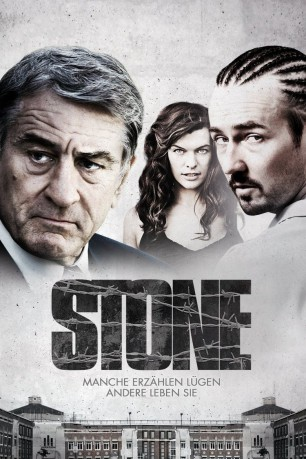

#1432 Stone
Alternativ: Stone
 
 IMDB-Wertung: 5.4 / 10
IMDB-Wertung: 5.4 / 10  Metascore: 58
Metascore: 58 
Das Gutachten über den Totschläger und Brandstifter Gerald "Stone" Creeson ist kein einfacher Fall. Die Sitzungen mit dem redegewandten und verdammt schlauen Häftling sind nicht gerade das, was man sich als Bewährungsbeamter kurz vor der Pensionierung wünschen würde. Für Jack Mabry wird der Fall zu einer letzten großen Prüfung, denn Stone setzt alle Hebel in Bewegung, um seine vorzeitige Entlassung zu erreichen - einschließlich seiner höchst verführerischen Frau. Die äußere Schale des Beamten wird immer rissiger...
Jahr: 2010
Dauer: 105 Minuten
FSK: 16
Land: USA Studio: Overture FilmsTonspuren: DTS - ,
Untertitel: Deutsch,
Auflösung: 1080p (1920x800) Größe: 6451 MB
Genre: Drama, Thriller
Regisseur: John Curran
Drehbuch: Angus MacLachlan
Soundtrack:
Darsteller:
 Robert De Niro als Jack
Robert De Niro als Jack Edward Norton als Stone
Edward Norton als Stone Milla Jovovich als Lucetta
Milla Jovovich als Lucetta Frances Conroy als Madylyn
Frances Conroy als Madylyn Enver Gjokaj als Young Jack
Enver Gjokaj als Young Jack- Pepper Binkley als Young Madylyn
- Sandra Love Aldridge als Miss Dickerson
- Rachel Loiselle als Candace
 Peter Gray Lewis als Warden
Peter Gray Lewis als Warden Sarab Kamoo als Janice
Sarab Kamoo als Janice Richard Goteri als Guard #2
Richard Goteri als Guard #2- Big Ron Lyons als Guard #3
 Linda Boston als Lead Teacher
Linda Boston als Lead Teacher- John Bostic als Inmate #5
- Tevis R. Marcum als Lucetta's Man #1
- Jonathan Stanley als Lucetta's Man #2
- Chris Nolte als White Power Inmate #1
- Tobiasz Daszkiewicz als White Power Inmate #2
 Thomas D. Mahard als Some Guy
Thomas D. Mahard als Some Guy- Tom Lowell als Infirmary Guard
- Banzai Vitale als ND Driver
- Greg Trzaskoma als Guard Peters
- Kylie Tarnopol als Young Candace
- Bailey Tarnopol als Young Candace
- Madison Tarnopol als Young Candace
- Richard Murphy als Guard #1
- David A. Hendricks als Pastor
- Wayne David Parker als Frank
- Madeline Loiselle als Lead Teacher Amanda
- Jan Cartwright als Neighbor #1 / Madelyn's Friend #1
- Wallace Bridges als Police Captain
- James Oscar Lee als Sincere Inmate #1
- Marcus Sailor als Sincere Inmate #2
- Brian Peters als Inmate #1 / Teach
- David Strohschein als Inmate #2
- Jason Waugh als Inmate #3
- Lamont Bell als Inmate #4
- Jordyn Thomas als Child
- Rory Mallon als Walters
- Trudy Mason als Bobby's Widow
 Sammy A. Publes als Liquor Store Owner
Sammy A. Publes als Liquor Store Owner- Rod McIntosh als Lucetta's Man #3
- Jane Burkey als Madylyn's Friend #2
- Connie Cowper als Madylyn's Friend #3
- Bonnie Clevering als Madylyn's Friend #4
- John 'Punch' Lewis als Black Inmate
- Troy Coulon als Ex-Con
- Mike Shreeman als Larry
- Kitty Joy Schur als Girl
- Nesti Gee als Prisoner , uncredited
Datei: X:\2010(N-Z)\Stone (2010, FSK16, 1920x800).mkv seit 04.07.2015
Festplatte: HD 2010(G-Z)-2011(A-F)
 Es gibt insgesamt 115 Filme in der Gruppe '2010(N-Z)'
Es gibt insgesamt 115 Filme in der Gruppe '2010(N-Z)'